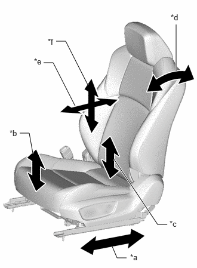
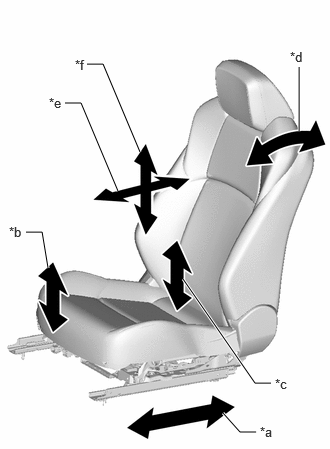

| Last Modified: 10-07-2025 | 6.11:8.1.0 | Doc ID: RM100000002GMAX |
| Model Year Start: 2024 | Model: Tacoma | Prod Date Range: [12/2023 - 03/2024] |
| Title: SEAT: FRONT POWER SEAT CONTROL SYSTEM: OPERATION CHECK; 2024 MY Tacoma Tacoma HV [12/2023 - 03/2024] | ||
OPERATION CHECK
CHECK POWER SEAT FUNCTION
(a) for Driver Seat
Operate the power seat switches and check that each seat function operates properly:
|
*a |
Slide Function |
|
*b |
Front Vertical Function |
|
*c |
Lifter Function |
|
*d |
Reclining Function |
|
*e |
Lumbar Support Adjustment Function (forward - back) |
|
*f |
Lumbar Support Adjustment Function (up - down) |
- Slide function
- Front vertical function
- Lifter function
- Reclining function
- Lumbar support adjustment function (forward - back)
- Lumbar support adjustment function (up - down)*1
- *1: w/ 4-way Lumbar Support
(b) for Front Passenger Seat
Operate the power seat switches and check that each seat function operates properly:
|
*a |
Slide Function |
|
*b |
Front Vertical Function |
|
*c |
Lifter Function |
|
*d |
Reclining Function |
|
*e |
Lumbar Support Adjustment Function (forward - back) |
|
*f |
Lumbar Support Adjustment Function (up - down) |
- Slide function
- Front vertical function
- Lifter function
- Reclining function
- Lumbar support adjustment function (forward - back)
- Lumbar support adjustment function (up - down)
HINT:
The front power seat switch is a collective term for the front power seat switch LH and the front power seat switch RH.
CHECK FRONT SEAT MOTOR (SLIDE, RECLINING, FRONT VERTICAL AND LIFTER FUNCTION)
(a) Check the PTC operation inside the power seat motor.
NOTICE:
- The inspection should be performed with the seat installed in the vehicle.
- Perform the 4 steps below to check the full range of motion for each power seat function.
HINT:
The resistance of the PTC thermistor increases when a switch of the front power seat switch is held down even after the seat has been moved to the farthest possible position in one direction. If the resistance increases beyond a specified level, the current is shut off to prevent a short circuit.
(1) Choose a power seat function. Operate a switch of the front power seat switch and move the seat to the farthest possible position in one direction. Keep the seat in that position for approximately 60 seconds.
(2) Operate the switch of the front power seat switch again and continue to try to move the seat in the same direction as in the previous step. Measure the time until the current is shut off (motor operation sound will stop).
Standard:
4 to 90 seconds
(3) After the current is shut off, release the switch of the front power seat switch and wait for approximately 60 seconds.
(4) Operate the same switch of the front power seat switch and move the seat in the opposite direction. Check that the motor operates.
CHECK FRONT LUMBAR SUPPORT MOTOR
(a) Check the PTC operation inside the front lumbar support motor (forward - back).
NOTICE:
The inspection should be performed with the seat installed to the vehicle.
(1) Operate the front power seat switch LH/RH and move the lumbar support to either the foremost or rearmost position. Keep the seat in that position for approximately 60 seconds.
(2) Operate the front power seat switch LH/RH again and continue to try to move the lumbar support in the same direction as in the previous step. Measure the time until the current is shut off (motor operation sound will stop).
Standard:
4 to 90 seconds
(3) After the current is shut off, release the front power seat switch LH/RH and wait for approximately 60 seconds.
(4) Operate the front power seat switch LH/RH and move the lumbar support in the opposite direction. Check that the motor operates.
(b) Check the PTC operation inside the front lumbar support motor (up - down). (w/ 4-way Lumbar Support)
NOTICE:
The inspection should be performed with the seat installed to the vehicle.
(1) Operate the front power seat switch LH/RH and move the lumbar support to either the uppermost or lowermost position. Keep the seat in that position for approximately 60 seconds.
(2) Operate the front power seat switch LH/RH again and continue to try to move the lumbar support in the same direction as in the previous step. Measure the time until the current is shut off (motor operation sound will stop).
Standard:
4 to 90 seconds
(3) After the current is shut off, release the front power seat switch LH/RH and wait for approximately 60 seconds.
(4) Operate the front power seat switch LH/RH and move the lumbar support in the opposite direction. Check that the motor operates.